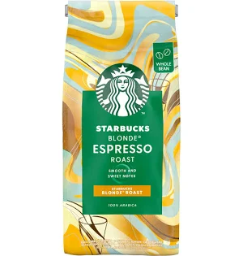

RSE & Refill
Un parcours plus responsable autour du café et des emballages.

Un café plus responsable, à chaque livraison
Starbucks Coffee Club s’engage à réduire son impact environnemental en optimisant chaque étape de votre abonnement. Découvrez nos actions concrètes pour un café plus durable :
- QR code de tri sur les emballages pour faciliter le recyclage.
- Réduction du suremballage et utilisation de matériaux recyclables.
- Livraisons regroupées et options de point relais pour limiter l’empreinte carbone.
- Conditionnement optimisé pour le café en grains, avec conseils de conservation.
- Programme de recyclage des capsules usagées.
- Transport à faible émission selon les zones et partenaires locaux.
Starbucks Coffee Club Refill
À partir de la deuxième année, Starbucks Coffee Club testera un service de recharge de café en grains dans quelques salons pilotes. Le client pourra commander son café via l’application, venir avec son contenant réutilisable et récupérer sa recharge dans un salon participant.